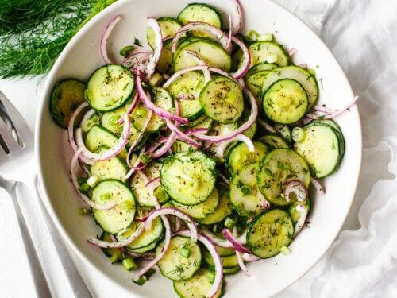

Cucumber Salad

Description
Making a refreshing cucumber salad couldn't be simpler. You'll find the full recipe below with step-by-step instructions, but here's what you can expect when you make this top-rated recipe :
Ingredients
- 2 large cucumbers, peeled and thinly sliced
- 1 sweet onion, thinly sliced
- 1 tablespoon sea salt
Steps
- Mix cucumbers, onion, and salt together in a bowl. Cover with plastic wrap and let sit for 15 to 30 minutes.